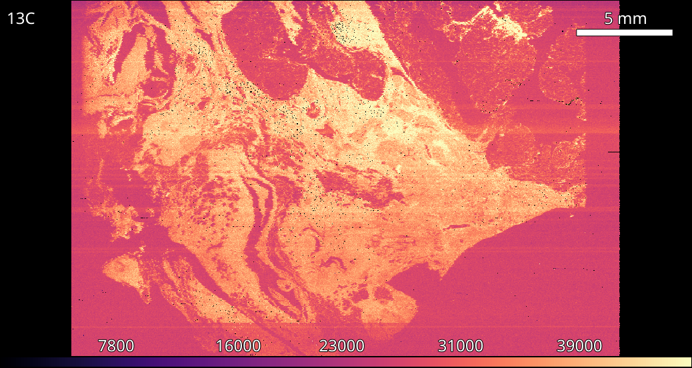
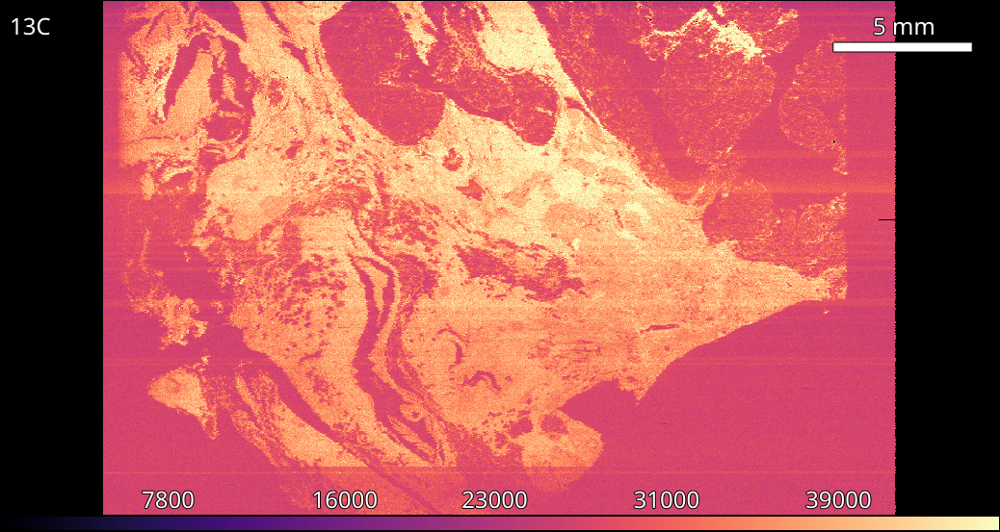

6. Filtering¶
Tools -> Filtering
Instrument noise often causes unwanted spikes in data. The Filtering tool removes spikes by applying a rolling filter across an image.
6.1. Available Filters¶
Type |
Threshold |
|
|---|---|---|
Rolling Mean |
σ |
Distance in stddevs from the local mean. Stddev excludes the tested value. |
Rolling Median |
M |
Distance in medians from the local median. |
6.1.1. Example: De-noising an image¶
{kind=link}

Negative spikes (-33) are visible due the to instrument missing an acquisition cycle.¶
- Using the Filtering tool select the appropriate filter.
Available filters are Rolling Mean and Rolling Median.
- Select appropriate filter size.
Typical window sizes are 3, 5 or 7. A larger window size will be more sensitive in detecting outlying data but is more likely to introduce artifacts.
- Select the appropriate filter threshold.
An outlying data (those above the thresholds in Available Filters) are set to the relevant local value. An ideal threshold will change invalid data while leaving valid data untouched.
{kind=link}

A rolling median filter replaces the invalid values with the local median.¶